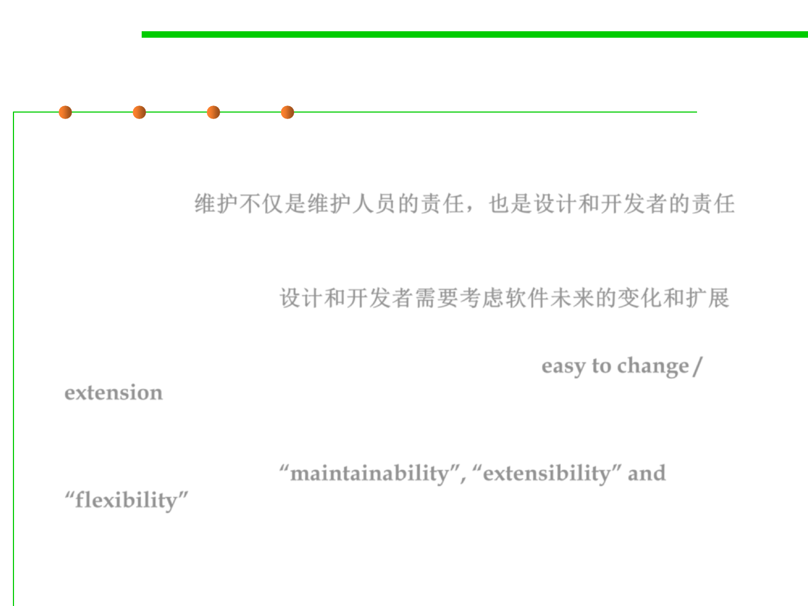

6.1 Metrics and Construction Principles for Maintainability
Maintenance is not just the task of op engineers…
▪ Maintenance is not just the task of maintenance and operation
engineers, but also a potential task of software designers and
developers. 维护不仅是维护人员的责任，也是设计和开发者的责任
▪ For them, it is mandatory to consider future potential
changes/extensions of the software during the design and
construction phases. 设计和开发者需要考虑软件未来的变化和扩展
▪ So that flexible and extensible design/constructions are
comprehensively considered, in other words, “easy to change /
extension”.
▪ This is what’s called “maintainability”, “extensibility” and
“flexibility” of software construction.